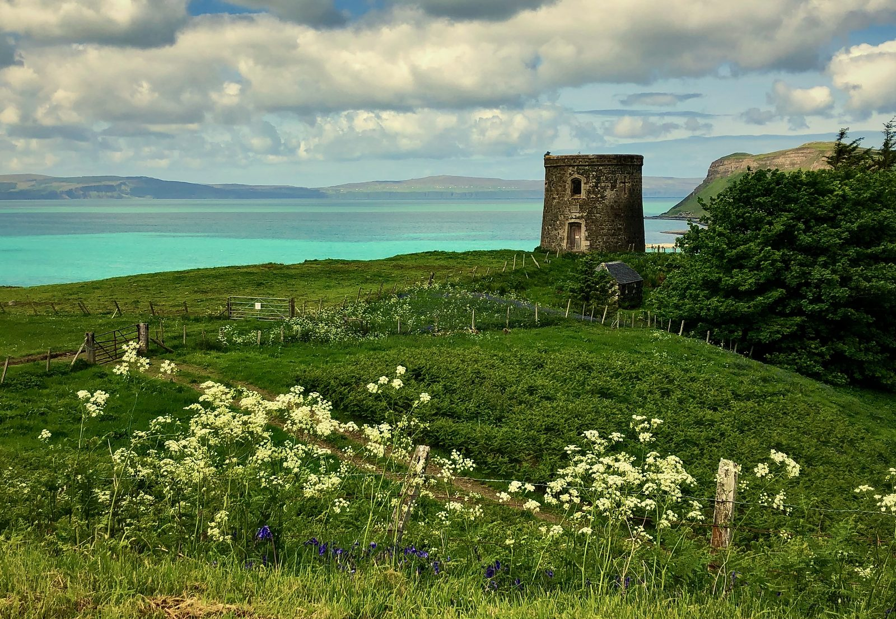
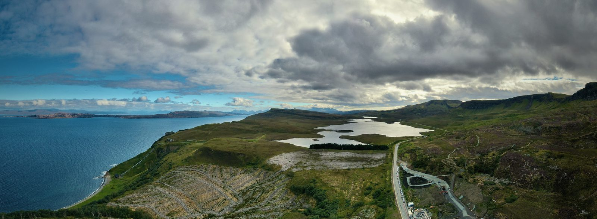

The Isle of Skye: Scotland's most spectacular island — and why one day will never be enough

There is a stone tower at the edge of Uig Bay on the northern coast of the Isle of Skye. Local people know it as Captain Fraser's Folly, though on maps it appears simply as Uig Tower. It was built, the story goes, by a slightly eccentric Victorian army captain who wanted a watchtower of his own — and it stands today just as he left it: solitary, windswept, and quietly magnificent against the green curve of the bay.
Cruise ships visiting Skye anchor in Portree Bay on the eastern coast, tendering passengers ashore into the island's colourful capital. Uig, twenty kilometres further north, is a different world entirely — quieter, less visited, and home to something most visitors never find time to seek out: that solitary tower watching over the horseshoe curve of the bay. Most who pass through never slow down enough to notice it. And that urgency — understandable, entirely human — is also the only thing standing between them and understanding what Skye actually is.
Skye is not a day trip. It rewards those who slow down, stay the night, and let the island come to them. This post is for those of you who came ashore at Portree and thought: I want to come back. Here is everything you need to know.
The island that changes with the light
The Isle of Skye covers roughly 1,600 square kilometres and stretches nearly 80 kilometres from the Sleat peninsula in the south to the cliffs of the Rubha Hunish headland in the north. It is the largest island in the Inner Hebrides, and also the most visited — more than 650,000 people come every year. In summer, the A87 through Portree fills with campervans; the car parks at the Fairy Pools and the Old Man of Storr overflow by nine in the morning.
None of that means Skye is spoiled. It means that Skye, more than most places in Scotland, rewards those who arrive early, stay late, or simply wander off the well-worn path. The light here changes faster than the weather forecast. One hour the Cuillin ridge is in cloud. The next, it burns copper in the evening sun.
The north: beyond Portree
Cruise ships visiting Skye anchor in Portree Bay, tendering passengers into the harbour of the island's compact, colourful capital. But Portree is just the beginning. The Trotternish peninsula stretches northward for forty kilometres, and its northern reaches — quieter, wilder, and far less visited — are where the island reveals its most dramatic landscapes. Uig, twenty kilometres north of Portree, sits at the base of a horseshoe bay backed by steep green hills and overlooked by that solitary tower on the ridge.
The village sits at the base of a horseshoe bay, backed by steep green hills and overlooked by that solitary tower on the ridge. From Uig, the road north leads to the Quiraing: one of the great geological spectacles of Scotland, a vast landslip of pinnacles, plateaux, and hidden meadows balanced on the northern flank of the Trotternish ridge. Walk the path to the top on a clear morning and you will see the Outer Hebrides across the Minch.
Portree, twenty kilometres south of Uig, is the island's hub. The harbour is lined with painted houses — pink, yellow, ochre — reflected in the still water on calm days. There are good independent restaurants and cafés clustered around the square, and it makes an excellent base for exploring the Trotternish peninsula.
Ten things to do on Skye
1. Walk the Quiraing. The most dramatic landscape in the north. A circular walk of around 7km takes you through pinnacles, past the hidden meadow known as The Table, and along the cliff edge with views across to the Outer Hebrides. Go early to beat the crowds.
2. Visit the Old Man of Storr. The iconic black rock pillar on the Trotternish ridge, visible from the A855 road north of Portree. The path to the base is well-maintained and takes around 45 minutes each way. The views back over the Sound of Raasay are worth every step.
3. Explore the Fairy Pools. A series of crystal-clear turquoise pools and waterfalls in the heart of the island, near the village of Glenbrittle at the foot of the Black Cuillin. The path is relatively easy and the colour of the water on a bright day is almost unreal. Arrive before 9am in summer.
4. Walk below the Cuillin. The Black Cuillin are the most technically challenging mountains in Britain — but you do not need to be a climber to experience them. The walk from Sligachan along the valley floor with the ridge towering above is unforgettable. Sligachan Hotel has been serving walkers since 1830.
5. Visit Dunvegan Castle. The oldest continuously inhabited castle in Scotland, home to the MacLeod clan for eight centuries. The gardens are particularly beautiful in summer, and the castle holds the famous Fairy Flag — a relic the clan believes will protect them in battle.
6. Drive the Trotternish peninsula. A full loop from Portree takes around three hours without stops — but with stops (Kilt Rock, Lealt Falls, the Quiraing, Duntulm Castle, Uig Bay), it easily fills a day. One of the finest coastal drives in Scotland.
7. Eat at the Oyster Shed, Carbost. A tiny corrugated-iron shack on the shore of Loch Harport that serves some of the best fresh seafood on Skye — oysters, langoustines, smoked salmon. It is not a restaurant. It is a shed. It is perfect.
8. Visit the Talisker Distillery. Skye's only single malt distillery, on the shores of Loch Harport near Carbost. Tours run daily and the classic Talisker 10-year is one of the great Scotch whiskies — peaty, maritime, unmistakably Skye.
9. Walk to Kilt Rock viewpoint. On the east coast of Trotternish, the basalt columns of Kilt Rock fall straight into the sea from a height of sixty metres, with the Mealt Falls cascading beside them. A five-minute walk from the car park gives you one of the most photographed views on the island.
10. Watch the sunset from Neist Point. The most westerly point on Skye, with a lighthouse at the end of a dramatic headland. The walk to the lighthouse takes about 30 minutes each way. In summer the sun sets close to midnight up here, and the colours over the Minch are extraordinary.

Why Skye rewards those who linger
The visitors who get the most from Skye are almost never the ones who arrive at nine and leave at five. They are the ones who book two or three nights somewhere quiet — a small hotel in Portree, a self-catering cottage near Staffin, a bothy-style hostel in Glenbrittle — and let the island show them what it actually is.
Part of that is practical. The roads on Skye are single-track in many places, and the distances between points of interest are greater than they look on a map. Trying to see the Quiraing, the Fairy Pools, Dunvegan Castle, and Talisker Distillery in one day is technically possible. It is also a guaranteed way to spend most of it in a car.
But mostly, it is about pace. Skye is an island that opens up slowly. The wildlife — red deer at dawn on the hill above Uig, golden eagles riding thermals above the Cuillin, otters in the kelp beds at low tide on the west coast — does not arrange itself for the schedule of a day visitor. The food scene, too, rewards staying: the Three Chimneys at Colbost has been one of Scotland's finest restaurants for thirty years, and a table there is worth planning a trip around. The Kinloch Lodge on the Sleat peninsula is another.
And then there is the light. In May and June, the sky on Skye barely gets dark. The sun sets late, the gloaming stretches for hours, and the Cuillin ridge goes through a dozen shades of amber and rose before the stars appear. That hour is free. It just requires that you are still there to see it.
The wider Highlands: there is so much more
Skye is magnificent, but it is only one thread in a much larger tapestry. The landscape north and east of the island is every bit as rewarding — and far less visited. Torridon, in Wester Ross, is one of the oldest mountain landscapes on earth — ancient red sandstone mountains rising from sea lochs in a way that feels almost primordial. Beinn Eighe, nearby, is Britain's oldest national nature reserve. Glen Affric, often called the most beautiful glen in Scotland, offers ancient Caledonian pine forest, a long ribbon of loch, red squirrels, and red kites overhead in season.
The Applecross peninsula, reached via the Bealach na Bà — one of the highest mountain passes in Britain, with hairpin bends and views to the Outer Hebrides — is one of the great driving experiences in Scotland. The village of Applecross at the end of the road has a famous pub on the beach. Sunset there over Raasay and Skye is something you will not forget. Further afield, the Cairngorms National Park, Loch Ness, Urquhart Castle, and the Moray Firth coast all sit within a two-to-three hour drive. The Highlands, approached properly, is not a single destination. It is a week. It is a fortnight. It is the kind of place people keep coming back to.
Invergordon and the Black Isle: your Highland base
Here is something the cruise ship itinerary does not tell you: Invergordon itself — and the wider Black Isle and Easter Ross peninsula — is one of the finest bases for exploring the Scottish Highlands that you will find.
The town sits on the southern shore of the Cromarty Firth, a sheltered sea loch famous as one of the best places in Britain to see bottlenose dolphins. The local pod — one of the largest in the UK — can often be spotted from the shore, and is regularly seen from cruise ships arriving in the firth. The Mural Trail along Invergordon's high street is one of the most visited public art attractions in the north of Scotland — large-scale paintings documenting the town's maritime and military history, all of them free, all of them outdoors, all of them guaranteed to stop you in your tracks.
Just across the Black Isle, Chanonry Point on the Moray Firth is arguably the single best place in Britain to see wild dolphins from dry land. At high tide, the local pod comes in close to feed in the narrows, and patient visitors are regularly rewarded with leaping, breaching displays just metres away. The Black Isle itself offers Fortrose Cathedral — a beautiful red sandstone ruin — and the historic fishing town of Cromarty at the tip of the peninsula, perfectly preserved with Georgian townhouses, a small passenger ferry across the narrows, and a deep connection to the geologist Hugh Miller, one of Scotland's great Victorian minds.
And then there is the whisky. Dalmore Distillery — producers of some of the world's most collectible single malts — sits right on the shore of the Cromarty Firth, two miles from Invergordon's cruise terminal. Glenmorangie is just up the coast at Tain. A distillery visit, a dolphin watch, and a walk along the Cromarty Firth: that is an afternoon, right here, that most visitors to Skye drive straight past without stopping.
Getting from Invergordon to Skye
The drive from Invergordon to Kyle of Lochalsh — the gateway to Skye via the Skye Bridge — takes around two hours fifteen minutes in normal traffic. The route goes via Dingwall, south along the A835 to Garve, then west through Achnasheen and down the A890 through Strathcarron and along the shore of Loch Carron. It is a beautiful drive in itself — mountain passes, sea lochs, and the mountains of Applecross to the north the whole way.
Invergordon also has a rail station on the Far North Line, with connections to Inverness. From Inverness, the Kyle of Lochalsh line — one of the great scenic railway journeys in Britain — runs west to the coast in around two and a half hours. If you have the flexibility, the train is the way to do it.
There is no direct public transport from Invergordon to Skye, but day tours from Inverness operate regularly in season. The most rewarding option, however, is to hire a car, take your time, and stay at least two nights on the island.
Because one day, as anyone who has been to Skye will tell you, is never enough.